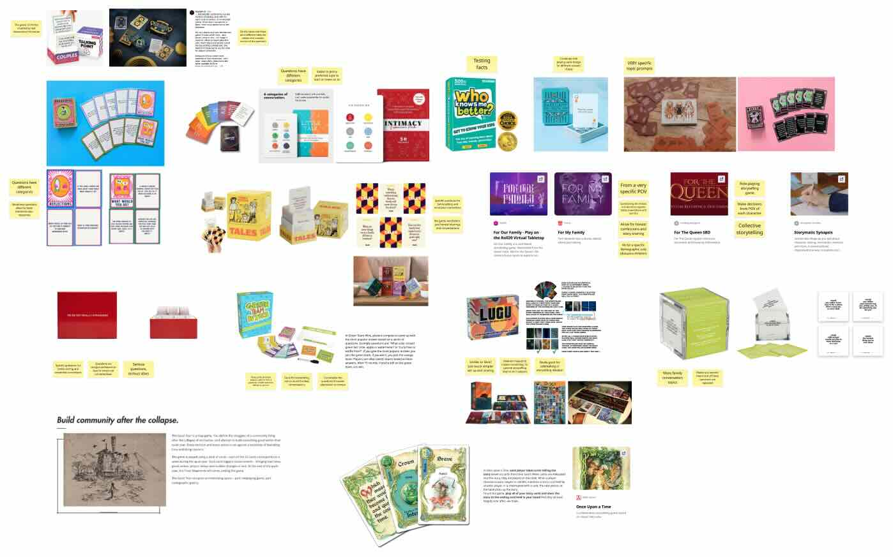
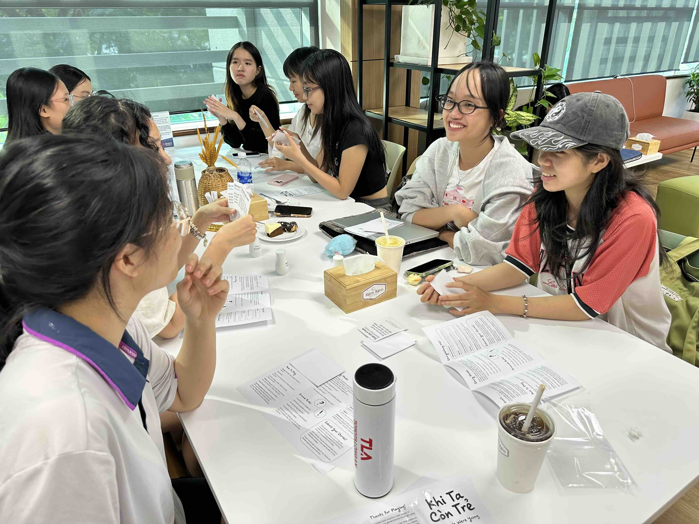

Objective
During my residency, I conducted a few interviews with members of my target audience to see what are the obstacles of transmitting cultural stories and memories in their families are. And the result is eye-opening in the sense that the younger members of families are not even willing to converse with their family due to the immense generational gap that they feel in their intergenerational relationships. This poses a much bigger problems as if they not even willing to communicate, then it's not just cultural knowledge that is lost but also the familial bond and structure that makes up society as we know it is also at stake. This realisation shifted my project from simply preserving cultural knowledge to creating the conditions for family to communicate and deepening empathy for one another, starting from this prototype.
Process Breakdown
Analysis of Existing Games
In order to start this project, I first looked at existing card games and what mechanics they employ. Card games is a huge market, and conversational card game is also a big part of this market. But despite working with only card, each game create different dynamics based on the topics and conversations they include, and some games even have specific rules on how the cards should be played, while others are more loose and allow players to play as they wish.
Brainstorming Topics
For this game, I want to create a common ground for all generations to be able to express their experience. According to Demiray et al., adults tend to recall a disproportionate number of memories from adolescence and early adulthood compared with other adult periods. This is called the reminiscence bump. So focusing on this fact, I want to circle the topics of the card game on childhood and nostalgia.So I started creating the deck and printed the first deck while I was still in Vietnam. In addition to the deck, I also created a guide pamphlet that includes the rules and also some tips for a successful conversation session that can be used to kickstart the game for shyer groups.
First User Test
First playtest was done during design residency in December. Performed with 3 different groups of university students in Vietnam. Each group had 4-6 players, age ranging from 18-22. In-game observation as well as post-game interview was conducted, using the MDA (Mechanics, Dynamics & Aesthetics) framework for game design to measure player’s experience ((Hunicke et al.). All players enjoyed the group story sharing mechanic, and shared personal experiences honestly and openly. The skip turn mechanic was not used at all, and players self-facilitated the sharing process as stories emerged naturally. However, all players expressed hesitance in playing at home, as the dynamic between players’ relationship would change, from peers to family members. Some players suggested alteration to existing questions that can make it more convenient as entry points for family conversations, but these mainly remove the personal dynamic of the questions. The collected feedback and suggestions were synthesized and implemented in the second iteration of the game, which was tested in March.
Further Development
Upon returning to Singapore, I kept working on this prototype by adding more questions to the deck, and also redesigning the rules based on the feedback from the first playtest. As initially, the rule was that each player only had to answer their own question while other players follow up on that question. But during the playtest, the players did not like this rule because they also wanted to answer that same question, so we tested letting all players answer the same question and the conversation flowed naturally from there. So, this was the new rule moving forward.Key Takeaways
- This iteration was successful in starting conversation among players but adjustments are still needed before players would be willing to take it into the familial space, but there is potential.